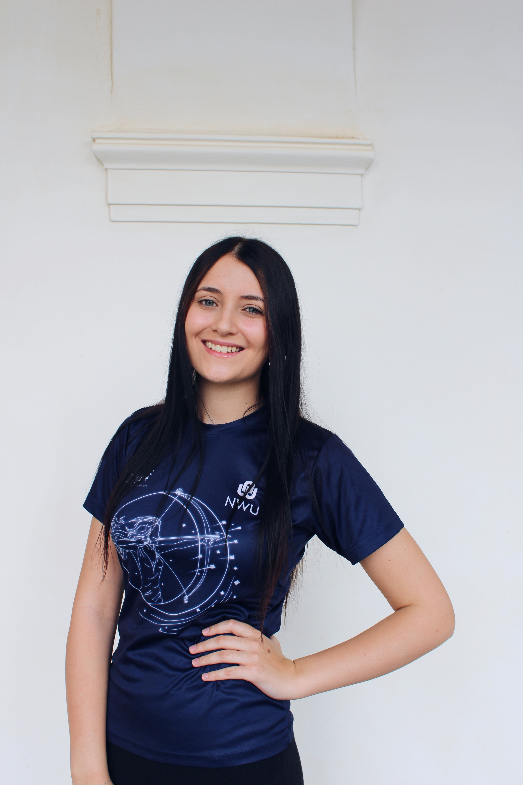

BSc Information Technology Student
Systems Thinking • Process Modelling • Data Analysis • IT Management
I'm a BSc Information Technology student at North-West University with a strong interest in systems thinking, process modelling, and data-driven decision making. I enjoy understanding how technology, people, and processes interact to create effective solutions. One of my key strengths is the ability to analyse situations from multiple perspectives and identify patterns, gaps, and opportunities that may not be immediately obvious to others. I am highly adaptable and naturally drawn to organising information, categorising complex concepts, and bringing structure to complex environments. I enjoy breaking down complex problems into manageable components and approaching them in a structured and analytical way. Through academic projects, leadership roles, and peer academic support, I continue to develop both my technical expertise and my ability to communicate, guide, collaborate, and contribute effectively within a team environment.
BSc Information Technology
Expected End Date: 2026
Developed a note-taking application in C# and XAML that allows users to create, edit and organize notes efficiently.
Collaborated in a team to design and build a complete IT system, including process modelling, database design and system analysis.
Designed and configured a VLAN-based network using Cisco Packet Tracer, including switch configuration, IP addressing and testing.
Worked with Google Teachable Machine, Python, NumPy, scikit-learn and Matplotlib to build AI and rule-based systems.
Designed and implemented a relational database solution using Oracle SQL and data modelling.
Performed statistical analysis and data visualisation using Excel to interpret and communicate data effectively.
Produced research-based multimedia content demonstrating communication, presentation and analytical skills.
Provide academic support to university students through tutoring sessions, assignment guidance, study planning and communication between students and lecturers.
Organized campus events, managed stalls, assisted with operations and represented Bellatrix Day House.
Recognized for leadership and contributions to Bellatrix Day House.
Awarded for active involvement and commitment.
Recognized for poetry presentation and performance.
Dr Dumani Kunjuzwa
Senior Lecturer, SCIS
North-West University